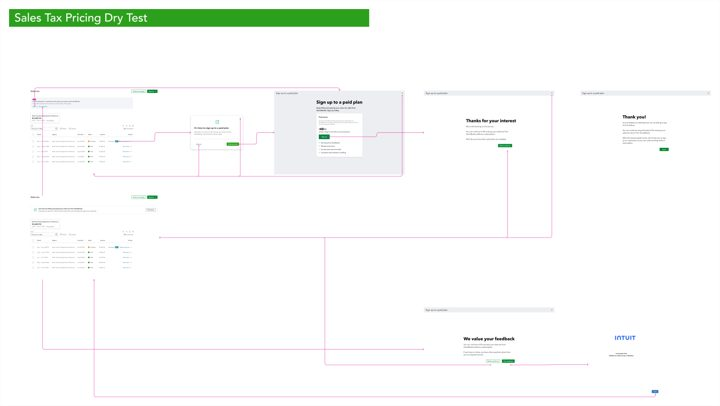

Project
Intuit QuickBooks US Sales Tax – Pricing Test
The challenge
We wanted to test in-product whether our 300 beta users would be willing to pay for a new sales tax subscription service. But it wasn't actually ready yet.
Dry tests are a delicate balancing act: we're gauging interest and getting users' hopes up, but we can't follow through.
How could we test without losing our first 300 potential customers?
What I did
- Created a mock-up to address gaps in the customer journey and to facilitate cross-functional conversations, including with Legal.
- Designed a survey to capture feedback from users who were and weren't willing to pay. This enabled us to collect useful data.
- Persuaded the Product Manager to allow beta users who weren't willing to pay to stay in the free beta programme, because they would provide us with ongoing valuable data. All our beta users were important; they helped us to design a service that customers were, ultimately, willing to pay for.

Outcome
- The data from the dry test enabled the Product Manager to build a strong business case that argued this new service would generate millions of US dollars for Intuit.
- From the get-go, I ensured both user and business needs were met.